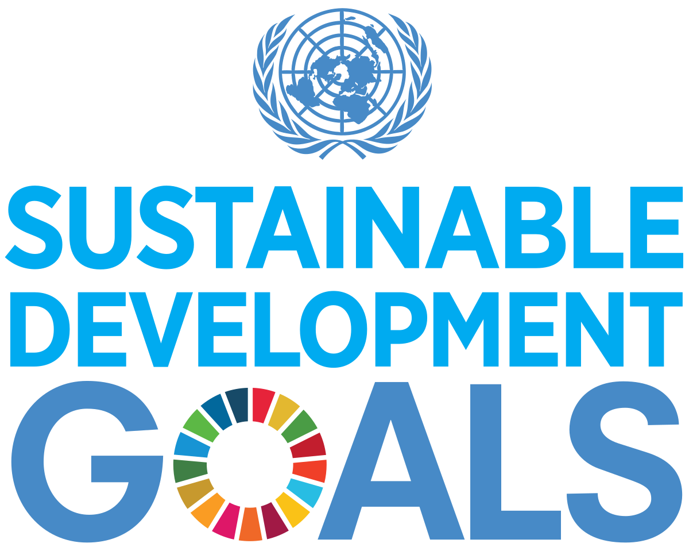
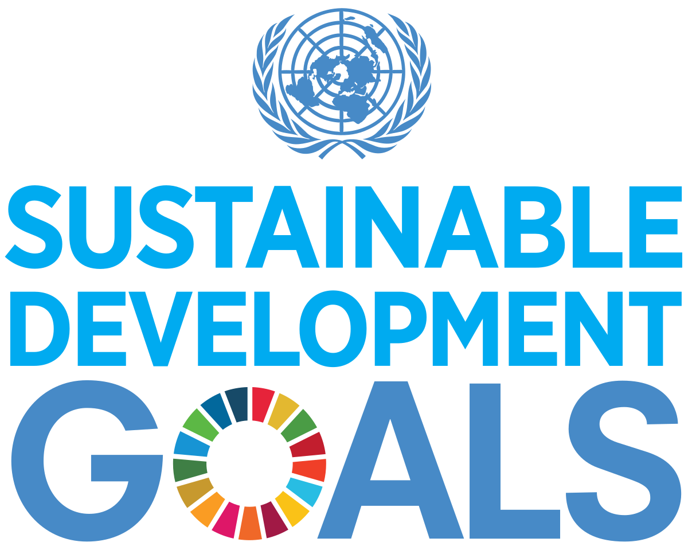

Themes
1
Carbon footprint water
Water footprint assessment, carbon-water-energy nexus, net zero carbon, Embodied carbon of water
usage, carbon emission mitigation
2
Circular economy
water sustainability, subcritical water extraction, Life Cycle Assessment of circular economy,
Circular economic valuation
3
Emerging contaminants in water and waste water
Principal component analysis, Advanced oxidation processes, Nanoremediation, metal phytotoxicity,
bioaccumulation of heavy metals
4
Green Technologies for Crude oil processing water treatment
biotreatment, liquid-liquid extraction, purification and detoxification, bio flocculant
5
Advancements in membrane technologies
5.Nanofiltration, Bio polyester membrane, Anti-fouling membranes, Membrane-based water quality
monitoring, Ultrafiltration
6
Ecological sanitation
evolution of toilets, management of solid and waste water, grey water management, Excreta
management, Health risk assessment
7
GIS and remote sensing in water monitoring
Water quality forecast, Environmental pollution assessment, Spatial distribution of groundwater,
Water erosion evaluation, Drought risk assessment
8
Smart farming and Hydroponics
Nutrient management system, Smart greenhouses, climate smart agriculture, precision farming,
Integrated farming system
9
Impact of Covid-19 on waste water management
Covid 19 wastewater surveillance, Biomedical Contamination
10
Incorporation of IOT, AI and ML in water technologies
Smart water resource management, smart irrigation system, water level control system, Source
water quality, Predictive safety assessment
11
Landless farming
Vertical farming, cattle farming system, Ruminant production, Sustenance of Dryland farmers
12
Novel desalination Technologies
Reverse osmosis, capillary-driven desalination, solar desalination, multi-effect distillation (MED),
Hydrate based desalination (HBD)
13
Process Water Treatment Technology
Advanced water treatment technologies (AWTT), Photocatalysis, Water pinch analysis, Micro &
Nanotubule technology, Catalytic ozonisation
14
Produced water treatment
Offshore produced water treatment, algae-based produced water treatment, micellar-enhanced
ultrafiltration, novel settling tank technologies
15
Recovery and remediation of marine oil- spills
Principal component analysis, Advanced oxidation processes, Nanoremediation, metal phytotoxicity,
bioaccumulation of heavy metals
16
Green Technologies for Crude oil processing water treatment
biotreatment, liquid-liquid extraction, purification and detoxification, bio flocculant
17
Carbon footprint water
Water footprint assessment, carbon-water-energy nexus, net zero carbon, Embodied carbon of water
usage, carbon emission mitigation
18
Circular economy
water sustainability, subcritical water extraction, Life Cycle Assessment of circular economy,
Circular economic valuation
19
Emerging contaminants in water and waste water
Principal component analysis, Advanced oxidation processes, Nanoremediation, metal phytotoxicity,
bioaccumulation of heavy metals
20
Green Technologies for Crude oil processing water treatment
biotreatment, liquid-liquid extraction, purification and detoxification, bio flocculant
21
Carbon footprint water
Water footprint assessment, carbon-water-energy nexus, net zero carbon, Embodied carbon of water
usage, carbon emission mitigation
22
Circular economy
water sustainability, subcritical water extraction, Life Cycle Assessment of circular economy,
Circular economic valuation
23
Emerging contaminants in water and waste water
Principal component analysis, Advanced oxidation processes, Nanoremediation, metal phytotoxicity,
bioaccumulation of heavy metals
24
Green Technologies for Crude oil processing water treatment
biotreatment, liquid-liquid extraction, purification and detoxification, bio flocculant
 
